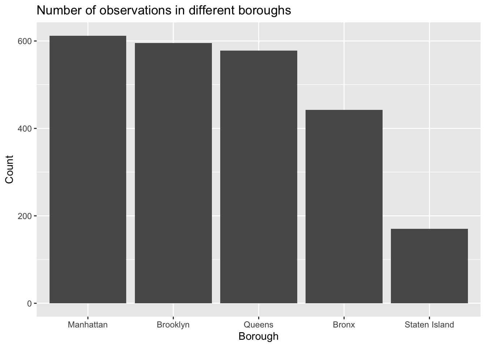

Chapter 3 Data transformation
Initially the two datasets were imported and combined into a single data frame. The single dataframe now consisted of shooting data provided by the NYPD over the years 2006 to 2019. As we are evaluating on neighborhoods it is necessary to find out what neighborhood each event corresponds to. Unfortunately, unlike the other two datasets the zip code was not provided and the only information given was the longitude and latitude data. Using python packages we were able to retrieve the zip code information using longitude and latitude data. After the zip codes were added in a new column ‘Zip’ the file was exported as NYPD_ZIP.csv. The below is the python code we used.
As a result, we have decided to utilize a reduced version of this dataset that only includes data starting in 2011.
For a lot of our analysis we will want a combined dataset, so we can append the historical data to the 2021 data like so:
In this dataset, many columns are pre-processed by the authors, so our work is to choose the variables we need and change the names and orders of factor levels.
We cleaned the dataset in the following steps:
Select AppStore, PriceSensitive, WhyDownload, Currency & demographic columns (Gender, Age, Nationality, Education, Occupation, etc.)
Mutate character variables to factors
Rename the levels with readable information
Reorder the levels for future visualization
In this section, we are going to load our dataset and clean it. There are five main steps to transform the dataset: 1) download the csv files from the NYCD OpenData and extract data only from a specific time interval, 2) continue to select a proportion of variables to avoid unnecessary data, 3) detect the missing values in the dataset and replace them with “NA”, 4) add or remove some variables that may be helpful to conduct our analyses, and 5) change the orders of factor levels or some character’s names so that they can be easily understood.
We combine sub-datasets into on dataset as a whole. For example, after we add the information of years in different sub datasets, we will combine these data sets into one dataset that contains information of all of these years. For some NAs that still exists, we fill them by the group averages within combined datasets. We do calculations based on the existed variables to get other variables that we want add them as new columns.
3.1 COVID-19 Dataset
This file contains information on the number and estimated percentage of NYC residents fully vaccinated and residents who received at least one dose of COVID-19 vaccine by Modified ZCTA (MODZCTA). Percentages of NYC residents vaccinated is calculated against the estimated total population of the specified MODZCTA.
Note that the number of people vaccinated may exceed the estimated population and lead to more than 100% vaccination coverage, especially for smaller demographic categories and geographies.
Since the dataset provided is already clean, we only need to extracted the necessary columns that are mentioned in the previous chapter.
3.2 Crime Dataset
3.2.1 Shooting Incident Data
After downloading the csv file from the website, we combine the NYPD Shooting Incident Data (Historic) and the NYPD Shooting Incident Data (Year to Date). Since we are more confused on people’s living condition in New York city during the pandemic, we only select data from 2020-01-01 to 2021-09-30 and export it a csv file. We consider BORO, LOCATION_DESC, OCCUR_DATE, OCCUR_TIME, STATISTICAL_MURDER_FLAG, VIC_AGE_GROUP, VIC_RACE, and VIC_SEX as important variables and remove the remaining variables. We also change each name for the BORO column to make it more readable.
## BORO LOCATION_DESC OCCUR_DATE
## Length:3473 Length:3473 Length:3473
## Class :character Class :character Class :character
## Mode :character Mode :character Mode :character
##
## OCCUR_TIME STATISTICAL_MURDER_FLAG VIC_AGE_GROUP
## Length:3473 Mode :logical Length:3473
## Class1:hms FALSE:2799 Class :character
## Class2:difftime TRUE :674 Mode :character
## Mode :numeric
## VIC_RACE VIC_SEX
## Length:3473 Length:3473
## Class :character Class :character
## Mode :character Mode :character
## ## # A tibble: 6 × 8
## BORO LOCATION_DESC OCCUR_DATE OCCUR_TIME STATISTICAL_MURDER…
## <chr> <chr> <chr> <time> <lgl>
## 1 Brooklyn <NA> 1/1/20 02:35 FALSE
## 2 Bronx MULTI DWELL - PUBL… 1/1/20 10:29 TRUE
## 3 Bronx MULTI DWELL - PUBL… 1/1/20 10:29 TRUE
## 4 Manhattan <NA> 1/1/20 21:47 TRUE
## 5 Brooklyn <NA> 1/2/20 04:10 FALSE
## 6 Manhattan MULTI DWELL - PUBL… 1/2/20 16:25 FALSE
## # … with 3 more variables: VIC_AGE_GROUP <chr>, VIC_RACE <chr>,
## # VIC_SEX <chr>3.2.2 Arrest Data
We follow the similar steps as shown before by combining the NYPD Arrest Data Data (Historic) and the NYPD Arrest Data Data (Year to Date). We only select data from 2020-01-01 to 2021-09-30 to keep it consistent with the shooting incident dataset and export it a csv file. We consider ARREST_BORO, ARREST_DATE, LAW_CAT_CD, OFNS_DESC, and PD_DESC as important variables. We also add three new variables ArrestYear, ARREST_MONTH, and ARREST_WEEKDAY.
## ARREST_BORO ARREST_DATE LAW_CAT_CD
## Length:255712 Min. :2020-01-01 Length:255712
## Class :character 1st Qu.:2020-05-26 Class :character
## Mode :character Median :2020-11-30 Mode :character
## Mean :2020-11-18
## 3rd Qu.:2021-05-06
## Max. :2021-09-30
## OFNS_DESC PD_DESC ArrestYear ARREST_MONTH
## Length:255712 Length:255712 2020:140413 Min. : 1.000
## Class :character Class :character 2021:115299 1st Qu.: 3.000
## Mode :character Mode :character Median : 5.000
## Mean : 5.714
## 3rd Qu.: 8.000
## Max. :12.000
## ARREST_WEEKDAY
## Length:255712
## Class :character
## Mode :character
##
##
## ## # A tibble: 6 × 8
## ARREST_BORO ARREST_DATE LAW_CAT_CD OFNS_DESC PD_DESC ArrestYear
## <chr> <date> <chr> <chr> <chr> <fct>
## 1 Brooklyn 2020-01-01 Felony ROBBERY ROBBERY,O… 2020
## 2 Bronx 2020-01-01 Misdemeanor DANGEROUS WE… WEAPONS, … 2020
## 3 Bronx 2020-01-01 Misdemeanor ASSAULT 3 & … OBSTR BRE… 2020
## 4 Brooklyn 2020-01-01 Misdemeanor POSSESSION O… STOLEN PR… 2020
## 5 Brooklyn 2020-01-01 Felony MISCELLANEOU… PUBLIC AD… 2020
## 6 Queens 2020-01-01 Misdemeanor INTOXICATED … INTOXICAT… 2020
## # … with 2 more variables: ARREST_MONTH <dbl>, ARREST_WEEKDAY <chr>3.2.3 Hate Crimes Data
Since the dataset provided is already clean, we only need to extracted the necessary columns that are mentioned in the previous chapter.
3.3 Air Quality Dataset
We first extracted the necessary columns that are mentioned in the previous chapter. Then we notice that in the Measure column, there are only two values, we only use Mean as out measure since there are not enough data for the other one.
| Var1 | Freq |
|---|---|
| Mean | 2397 |
| million miles | 321 |
In the Measure column, there are only three values. After counting the numbers of different values, we decide not to remove any values.
| Var1 | Freq |
|---|---|
| Fine Particulate Matter (PM2.5) | 987 |
| Nitrogen Dioxide (NO2) | 987 |
| Ozone (O3) | 423 |
After removing some observations, we notice that in this data, there are hundreds of values in Neighborhood name columns, we need to use the Geo Join ID column to classify them into different boroughs. The Geo Join ID variable is the identifier of the neighborhood geographic area, which is a three or six digits number. The first digit represents different boroughs.

From the histogram above we can see that after classification, the dataset seems to be pretty balanced.